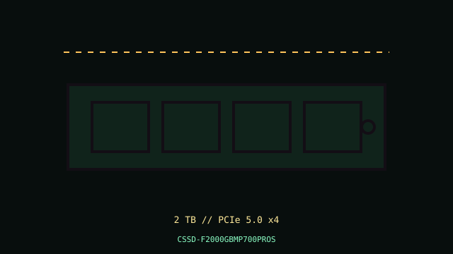

[ PCIE 5.0 NVME // IDENTIFIED PRODUCT ]
Corsair MP700 PRO SE 2 TB
2 TB M.2 2280, PCIe 5.0 x4 NVMe SSD. Exact manufacturer part number CSSD-F2000GBMP700PROS. Manufacturer-rated sequential performance and specific fit details are below.

IDENTIFICATION: Confirm complete MPN and heatsink/cooling suffix from the unit label. This SE model is distinct from MP700 PRO and MP700 PRO XT.
Manufacturer-identified specifications
| Product / MPN | Corsair MP700 PRO SE 2 TB — CSSD-F2000GBMP700PROS |
|---|---|
| Capacity / form factor | 2 TB; M.2 2280 with air cooler. |
| Interface / host lanes | PCIe 5.0 x4. |
| Protocol | NVMe 2.0. |
| Sequential performance / endurance | Up to 14,000 MB/s read and 12,000 MB/s write; 1,400 TBW. |
| Controller / NAND | Phison E26 controller and 3D TLC NAND per Corsair product documentation. |
| Thermal configuration | Factory air-cooler package per MPN; ensure airflow, power and clearance around its cooling assembly. |
Compatibility, boot, installation & service
- Requires an M-key NVMe socket that supports PCIe 5.0 x4 for full link speed; it negotiates down on earlier systems. Check board/CPU lane allocation, UEFI NVMe boot support and target-OS NVMe driver support.
- Verify exact included heatsink/cooling assembly, clearance, connector/cable requirements, and case airflow using the package datasheet. Fit is not established by M.2 keying alone.
- Maintain backup and firmware recovery; shut down fully and follow ESD and host service precautions. Do not hot-plug M.2 unless platform documentation explicitly permits it.
Model-specific manufacturer references
- Corsair MP700 PRO SE 2 TB — manufacturer product referenceVerify exact MPN, capacity, cooling configuration, current datasheet and warranty terms.
- NVM Express specificationsProtocol reference only; not evidence of product-specific ratings.
Vendor maximum speeds are condition-dependent; warranty endurance is subject to the vendor's terms.